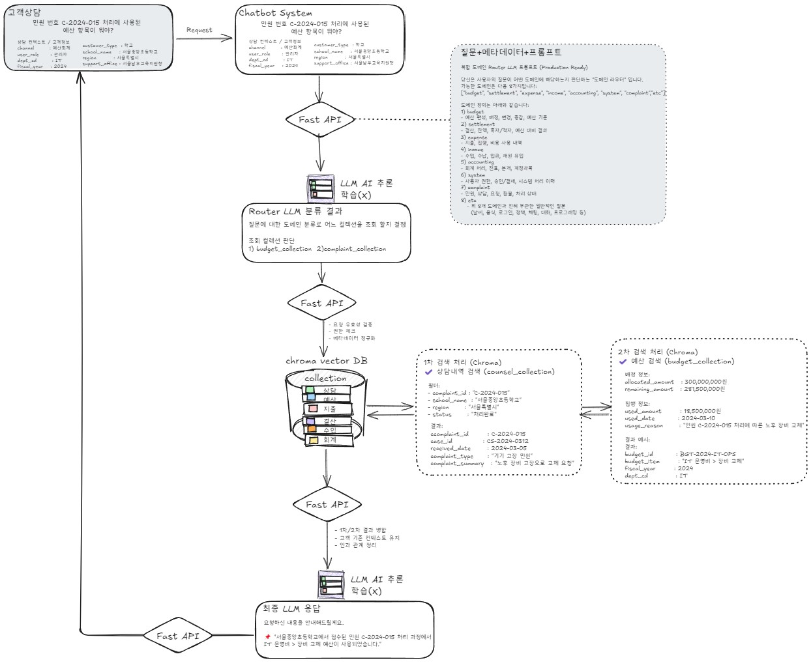

FAQ/ChromaDB 검색 + Ollama 추론(+STT FAQ 생성) 하이브리드 챗봇 — 통합본 (92)
작성자: 정현철 (regline@naver.com, 010-2011-6314)
작성일: 2026-06-27
목적: 챗봇 관리자/고객지원 시스템의 메뉴·기능 설명, 시스템 흐름도, 엑셀 FAQ 배치 업로드, STT→FAQ 자동생성 파이프라인을 한 문서로 통합
범위: 시스템 아키텍처·Q&A 흐름, 상담원/관리자 메뉴(화면 캡쳐), 데이터 관리(엑셀 업로드 상세), STT→FAQ 후보 워크플로우 [0]~[13]
목차
시스템 흐름도
아이디어 스케치

1. 시스템 전체 아키텍처
1. 클라이언트 레이어 (Client Layer)
웹 브라우저·모바일 앱에서 동일한 챗봇 인터페이스 제공.
2. 프론트엔드 레이어 (Frontend — React)
- 챗봇 UI (frontend_react): End-user 대화 인터페이스.
- 관리자 대시보드 (admin_frontend_react): 모니터링·통계·데이터 관리.
3. 백엔드 레이어 (Backend — Python)
- 챗봇 API (backend_python, 9000): Q&A, LLM·벡터 검색.
- 관리자 API (admin_backend_python, 9001): 통계·배치·설정.
4. AI 서비스 레이어 (AI Service)
- Ollama LLM (125.129.220.131): AI추론·AI자유 모드 응답 생성.
- 벡터 검색: ChromaDB FAQ 유사도 검색.
5. 데이터 저장소 (Data Storage)
- MariaDB: FAQ SSOT, 세션·대화 로그.
- ChromaDB: FAQ 벡터 인덱스.
- JSON: 컬렉션별 FAQ 동기화·백업.
챗봇 인터페이스] Mobile[모바일 앱
챗봇 인터페이스] end subgraph Frontend["프론트엔드 (React)"] AdminUI[관리자 대시보드
admin_frontend_react] ChatUI[챗봇 UI
frontend_react] end subgraph Backend["백엔드 레이어"] AdminAPI[관리자 API
admin_backend_python
포트: 9001] ChatAPI[챗봇 API
backend_python
포트: 9000] end subgraph Database["데이터 저장소"] MariaDB[(MariaDB
FAQ 데이터
세션/로그 데이터)] ChromaDB[(ChromaDB
벡터 DB
FAQ 벡터화)] JSONFiles[JSON 파일
FAQ 동기화
컬렉션별 저장] end subgraph AI["AI 서비스"] Ollama[Ollama LLM
외부 서버
125.129.220.131] VectorSearch[벡터 검색
유사도 검색] end Web --> ChatUI Mobile --> ChatUI ChatUI --> ChatAPI AdminUI --> AdminAPI ChatAPI --> MariaDB ChatAPI --> ChromaDB ChatAPI --> Ollama ChatAPI --> VectorSearch ChatAPI --> JSONFiles AdminAPI --> MariaDB AdminAPI --> ChromaDB AdminAPI --> JSONFiles VectorSearch --> ChromaDB Ollama --> ChatAPI style Client fill:#e1f5ff style Frontend fill:#fff9c4 style Backend fill:#c8e6c9 style Database fill:#ffccbc style AI fill:#e1bee7
2. 챗봇 질문-답변 처리 흐름
• 사용자 질문 → backend_python(9000) → ChromaDB·MariaDB(FAQ) 검색 및 키워드 Fallback → (모드에 따라) 검색 결과 반환 또는 Ollama 연동 → MariaDB 로그 저장.
(벡터 검색) participant MariaDB as MariaDB
(FAQ 데이터) participant Ollama as Ollama LLM participant AdminDB as 관리자 DB
(로그 저장) User->>ChatUI: 질문 입력 ChatUI->>ChatAPI: POST /chat
질문 전송 ChatAPI->>VectorDB: 벡터 유사도 검색
질문을 벡터로 변환
유사 FAQ 검색 VectorDB-->>ChatAPI: 유사 FAQ 목록 반환 ChatAPI->>MariaDB: FAQ 상세 정보 조회
question_num으로 조회 MariaDB-->>ChatAPI: FAQ 답변 반환 alt 벡터 검색 결과 있음 ChatAPI->>ChatAPI: 벡터 검색 결과 활용
FAQ 답변 선택 else 벡터 검색 결과 없음 ChatAPI->>ChatAPI: 키워드 검색 수행
Fallback 검색 end ChatAPI->>Ollama: LLM 프롬프트 생성
FAQ 컨텍스트 포함 Ollama-->>ChatAPI: LLM 응답 생성 ChatAPI->>AdminDB: 대화 로그 저장
질문/답변/메타데이터 AdminDB-->>ChatAPI: 저장 완료 ChatAPI-->>ChatUI: 답변 반환 ChatUI-->>User: 답변 표시
4. 관리자 대시보드 데이터 흐름
• admin_frontend_react → admin_backend_python(9001). 대시보드·모니터링·데이터관리·리포트 메뉴가 각 API(/api/stats, /api/monitoring/sessions, /api/data-management, /api/reports)로 MariaDB(로그·세션·FAQ·집계)를 조회합니다.
KPI/통계] Monitoring[실시간 모니터링
세션 목록] DataMgmt[데이터 관리
FAQ 업로드] Reports[운영 리포트
기간별 분석] end subgraph AdminBackend["관리자 백엔드 API"] StatsAPI[통계 API
/api/stats] SessionAPI[세션 API
/api/monitoring/sessions] DataAPI[데이터 관리 API
/api/data-management] ReportAPI[리포트 API
/api/reports] end subgraph DataStore["데이터 저장소"] LogDB[(대화 로그
conversations)] SessionDB[(세션 데이터
sessions)] FAQDB[(FAQ 데이터
faqs)] MetricsDB[(집계 데이터
daily_operations_metrics)] end Dashboard --> StatsAPI Monitoring --> SessionAPI DataMgmt --> DataAPI Reports --> ReportAPI StatsAPI --> LogDB StatsAPI --> FAQDB SessionAPI --> SessionDB SessionAPI --> LogDB DataAPI --> FAQDB ReportAPI --> MetricsDB ReportAPI --> LogDB style AdminFrontend fill:#e1f5ff style AdminBackend fill:#fff9c4 style DataStore fill:#c8e6c9
시스템 흐름 참고사항:
- 시스템은 클라이언트, 프론트엔드, 백엔드, 데이터 저장소, AI 서비스 레이어로 구성되어 있습니다.
- 질문-답변 처리 시 벡터 검색과 키워드 검색을 통해 가장 적합한 답변을 찾아 LLM으로 생성합니다.
- FAQ 데이터는 벡터화 과정을 통해 검색 가능한 형태로 변환되며, 즉시 처리와 일괄 처리 방식을 지원합니다.
0. 챗봇 UI
• 예산회계 고객지원 챗봇 End-user용 화면입니다. 구현 위치는 frontend_react(포트 3000)입니다.
• 세션 시작: 인트로에서 사용자 ID를 선택한 뒤 채팅 아이콘을 누르면 세션이 생성됩니다.
• 텍스트 질의: 채팅 헤더 토글로 대화 모드를 선택(Normal → AI추론 → AI자유 순환).
- Normal 모드: FAQ → ChromaDB 검색 결과를 그대로 표시(Ollama 미호출).
- AI추론 모드: FAQ → ChromaDB 검색 결과를 → Ollama(Llama3) context로 전달해 답변 생성.
- AI자유 모드: Ollama(Llama3)에 직접 질의.
• 음성(STT) 입력: 하단 마이크 버튼으로 녹음 파일을 업로드하면 Whisper가 텍스트로 변환하여 질의합니다.

1. 상담원 대시보드 메인 화면
• 상담원 메인 화면(1.1 대시보드). admin_frontend_react(로컬 3002) → admin_backend_python(9001) 통계·세션·로그 API.
• 대시보드: 활성 세션(Socket.IO), KPI(질문·매칭률·미등록·Fallback), 키워드, 최근 로그, 시간대별 세션, 시스템 리소스, 알림.
• 세션 연동: 세션 아이콘 클릭 → 1.2 실시간 모니터링 해당 대화 이동.
• 기타 메뉴: 실시간 모니터링, 로그 분석, 데이터 관리(FAQ·엑셀), 운영 리포트(좌측 메뉴).
1.4 데이터 관리
1.4.1 엑셀 데이터 업로드
- 컬렉션 선택: FAQ를 등록할 컬렉션(공통, A, B, C)을 선택하고, 해당 컬렉션의 FAQ 양식 템플릿을 다운로드할 수 있습니다.
- 엑셀 파일 업로드: 질문과 답변이 포함된 엑셀 파일을 업로드하여 대량의 FAQ를 일괄 등록합니다. 20건 이하는 즉시 처리, 20건 이상은 배치 처리로 자동 분기됩니다.
- 단건 FAQ 입력: 웹 인터페이스를 통해 질문과 답변을 직접 입력하여 FAQ를 개별 등록하고, 즉시 벡터화 및 서비스 반영이 가능합니다.
- 컬렉션 초기화: 특정 컬렉션의 모든 FAQ 데이터를 초기화하여 재구축할 수 있습니다. (주의: 복구 불가능)

- Mermaid 코드를 직접 HTML에 포함하여 JavaScript로 렌더링
- 이미지 파일 불필요 (PNG 파일 없이도 작동)
- 코드 수정 시 즉시 반영 (이미지 재생성 불필요)
- 확대/축소 가능 (브라우저 기본 기능)
- 인터넷 연결 필요 (Mermaid.js CDN 사용)
비교: 이미지 버전은 오프라인에서도 작동하지만, 수정 시 이미지 재생성이 필요합니다.
1. 핵심 원칙
1.1 DB를 SSOT (Single Source of Truth)로 사용
- DB를 먼저 업데이트
- DB 업데이트 완료 후 → JSON 파일 생성 (중복 체크 불필요)
- JSON 파일은 DB에서 자동 동기화
1.2 JSON 파일 업데이트 원칙
핵심 원칙: 모든 승인된 데이터(`status='approved'`)는 동일한 조건으로 JSON 파일에 반영
- 단건 입력, 20건 이하, 20건 이상의 정상 데이터 처리 과정은 다를 수 있지만
- 최종적으로 승인되어 벡터화되는 모든 데이터는 동일한 방식으로 JSON 파일에 반영됨
- 오류 데이터나 미승인 데이터는 JSON 파일에 반영되지 않음
생성 파일: `sync_approved_faqs_to_json()` 함수 호출 시 두 파일 모두 생성
{컬렉션}.json(예: `공통.json`): 질문-답변만 포함 (쳇봇의 100% 일치 질문 비교용){컬렉션}_keyword.json(예: `공통_keyword.json`): 질문-답변-키워드 포함 (벡터 초기화/전체 재생성용)- 두 파일 모두 `status='approved'`인 FAQ만 포함 (DB에서 조회하여 생성)
시점 (처리 과정은 다를 수 있지만, 최종 JSON 반영 조건은 동일):
- 단건 입력: FAQ 저장 및 벡터화 완료 후 즉시 JSON 동기화
- 20건 이하 엑셀 업로드: 모든 FAQ 저장 및 벡터화 완료 후 JSON 동기화
- 20건 이상 엑셀 업로드: 모든 배치의 정상 데이터 처리 완료 후 한 번만 JSON 동기화
- 벡터 관리 승인: 문제 데이터 승인 시 개별 JSON 동기화
1.3 배치 처리로 메모리 효율성 확보
- 5000개씩 배치 처리
- 전체 질문 목록은 한 번만 로드하여 HashMap 생성
- 각 배치에서 HashMap 재사용
1.4 중복 체크는 한 번만
- DB 업데이트 시에만 중복 체크 수행
- 정규화된 질문 + 정규화된 답변 조합으로 판단
- JSON 생성 시에는 중복 체크 불필요 (DB가 SSOT)
1.5 건수별 처리 분기
| 구분 | 검증 여부 | 데이터 분류 | 저장 위치 | 벡터화 | 사후 관리 |
|---|---|---|---|---|---|
| 단건 입력 | ❌ 없음 | ❌ 없음 | 본DB | 즉시 | 수정/삭제 가능 |
| 20건 이하 | ⚠️ 중복 체크만 수행 (품질 검증 없음) |
❌ 없음 (모두 정상으로 가정) | 본DB (모두) | enable_vectorization에 따라 결정 True: 즉시 False: needs_vectorization=TRUE |
벡터 관리에서 수정/삭제 |
| 20건 이상 | ⭕ 검증 수행 | ⭕ 정상/문제 구분 | 정상: 본DB 문제: 임시DB |
정상: needs_vectorization=TRUE (벡터 관리에서 일괄 처리) 문제: 승인 후 |
정상: 불필요 문제: 승인 필요 |
- 20건 이하: `enable_vectorization` 파라미터에 따라 벡터화 여부 결정
- `enable_vectorization=True`: 즉시 벡터화 수행
- `enable_vectorization=False`: `needs_vectorization=TRUE`로 설정 (벡터 관리에서 일괄 처리)
- 20건 이상: `enable_vectorization=True`일 때는 에러 발생 (즉시 처리 모드는 20건 이하만 가능)
- 20건 이상: 정상 데이터는 즉시 벡터화하지 않고 `needs_vectorization=TRUE`로 설정 (벡터 관리에서 일괄 벡터화)
상세 처리 과정
- 단건 입력: FAQ 저장 → 즉시 벡터화 → 즉시 JSON 동기화
- 20건 이하: 중복 체크만 수행 (케이스 1 스킵), 품질 검증 없이 본 테이블 저장 → `enable_vectorization`에 따라 벡터화 또는 `needs_vectorization=TRUE` 설정 → JSON 동기화 (모든 처리 완료 후) → 사후 관리 (벡터 관리에서 수정/삭제)
- 20건 이상: 검증 수행 (데이터 분류: 정상/문제 구분) → 배치 처리 → 정상 데이터는 본 테이블 저장 (`needs_vectorization=TRUE`) → 모든 배치 완료 후 JSON 동기화 → 문제 데이터는 임시 테이블 저장 → 벡터 관리에서 승인/일괄 벡터화
다이어그램
1. 전체 흐름도
excel_upload_history INSERT] History1 --> CountCheck[엑셀 파일 전체 건수 체크] CountCheck --> CountDecision{전체 건수 확인} CountDecision -->|≤ 20건 소량| SmallFlow[중복 체크만 수행] CountDecision -->|> 20건 대량| LargeFlow[검증 수행 후 배치 처리] SmallFlow --> SmallDB[본DB 저장
faqs 테이블
케이스 1 스킵, 케이스 2/3 저장] SmallDB --> SmallKeyword[키워드 추출 및 저장
faq_keywords 테이블] SmallKeyword --> SmallVectorCheck{enable_vectorization
확인} SmallVectorCheck -->|True| SmallVector[즉시 벡터화
needs_vectorization=FALSE] SmallVectorCheck -->|False| SmallNeeds[needs_vectorization=TRUE
벡터 관리에서 일괄 처리] SmallVector --> SmallJSON[즉시 JSON 동기화
sync_approved_faqs_to_json
컬렉션.json 생성
컬렉션_keyword.json 생성] SmallNeeds --> SmallJSON SmallJSON --> SmallComplete[서비스 반영 완료
즉시 사용 가능 또는
벡터 관리에서 일괄 벡터화 필요] SmallComplete --> History2[히스토리 기록 완료
excel_upload_history UPDATE] History2 --> Complete1[완료 메시지 표시] LargeFlow --> LargeDBLoad[DB 전체 질문 목록 로드
HashMap 생성 중복 체크
데이터 분류 수행
정상/문제 구분] LargeDBLoad --> BatchStart[배치 처리 시작
5000개씩 분할] BatchStart --> BatchProcess[각 배치마다 처리
1. 질문/답변 정규화
2. HashMap에서 중복 체크
3. 검증 기준 확인
4. 데이터 분류 실행] BatchProcess --> DataSplit{데이터 분류} DataSplit -->|정상 데이터
auto_approve_candidate| NormalData[본DB 저장
faqs 테이블
status=approved
needs_vectorization=TRUE] DataSplit -->|문제 데이터
pending_review/
duplicate_suspected/
error| ProblemData[임시DB 저장
faqs_temp 테이블] NormalData --> NormalKeyword[키워드 추출 및 저장
faq_keywords 테이블] ProblemData --> ProblemKeyword[키워드 추출 및 저장
faq_keywords_temp 테이블] ProblemKeyword --> ErrorLog[오류 발생 시
excel_upload_errors INSERT] ErrorLog --> Progress[진행률 업데이트] NormalKeyword --> Progress Progress --> NextBatch{다음 배치 처리
모든 배치 완료까지 반복} NextBatch -->|미완료| BatchProcess NextBatch -->|완료| Stats[통계 수집 및 결과 반환] Stats --> LargeJSON[JSON 동기화 수행
정상 데이터가 있는 경우에만
모든 배치 완료 후 한 번만
sync_approved_faqs_to_json 호출
컬렉션.json 생성/업데이트
컬렉션_keyword.json 생성/업데이트] LargeJSON --> LargeComplete[서비스 반영 완료
벡터 관리에서 일괄 벡터화 필요] LargeComplete --> History3[히스토리 기록 완료
excel_upload_history UPDATE] History3 --> VectorMgmt[벡터 관리 페이지에서 처리] VectorMgmt --> VectorNormal[정상 데이터
이미 자동 승인 완료
needs_vectorization=TRUE
일괄 벡터화 필요] VectorMgmt --> VectorProblem[문제 데이터
개별 처리] VectorProblem --> ProblemCheck[1. 문제 데이터 내용 확인
validation_status별 필터
질문/답변/오류 정보 표시] ProblemCheck --> ProblemAction{2. 처리 방식 선택} ProblemAction -->|수정 후 승인| EditApprove[질문/답변 수정
승인 처리] ProblemAction -->|그대로 승인| DirectApprove[승인 처리] ProblemAction -->|반려| Reject[반려 처리
히스토리 기록
반려 이력
임시DB 삭제] EditApprove --> ApproveProcess[임시DB→본DB
키워드 재추출
벡터화 수행
JSON 동기화
컬렉션.json 생성/업데이트
컬렉션_keyword.json 생성] DirectApprove --> ApproveProcess ApproveProcess --> ApproveComplete[서비스 반영 완료] ApproveComplete --> ApproveHistory[히스토리 기록
승인 이력] Reject --> Complete2[완료 메시지 표시] ApproveHistory --> Complete2 VectorNormal --> Complete2 Complete1 --> End([처리 완료]) Complete2 --> End style Start fill:#e1f5ff style End fill:#c8e6c9 style SmallFlow fill:#fff9c4 style LargeFlow fill:#fff9c4 style NormalData fill:#c8e6c9 style ProblemData fill:#ffccbc style VectorMgmt fill:#e1bee7
2. 20건 이상 업로드 상세 흐름
(메모리) participant Batch as 배치 처리
(5000개씩) participant NormalDB as 본DB
(faqs) participant TempDB as 임시DB
(faqs_temp) participant VectorMgmt as 벡터 관리
페이지 participant JSON as JSON 파일 participant VectorDB as ChromaDB User->>API: 엑셀 업로드 (20건 이상) Note over API: enable_vectorization 파라미터 확인
True일 때는 에러 발생
False로만 업로드 가능 API->>DB: 히스토리 기록 시작
(excel_upload_history INSERT) DB-->>API: 기록 완료 API->>DB: DB 전체 질문 목록 로드
(status='approved'인 데이터만) DB-->>API: 질문 목록 반환 API->>HashMap: HashMap 생성
(정규화된 질문+답변) Note over HashMap: (service_name, normalized_question):
{question_num, normalized_answers, ...} API->>Batch: 엑셀을 5000개씩 배치로 나눔 loop 각 배치마다 Batch->>Batch: 배치 내 row들 메모리에서 비교
(HashMap 활용) Note over Batch: 1. 질문/답변 정규화
2. 중복 체크 및 검증 실행
3. 케이스별 분류 Batch->>Batch: 데이터 분류 (정상/문제) Note over Batch: 케이스 1: 같은 질문+같은 답변
→ duplicate_suspected
케이스 2: 같은 질문+다른 답변
→ auto_approve_candidate
케이스 3: 다른 질문
→ 검증 조건 확인 alt 정상 데이터 Batch->>NormalDB: Bulk Insert (faqs 테이블)
status='approved'
validation_status='auto_approve_candidate'
needs_vectorization=TRUE NormalDB-->>Batch: 저장 완료 Batch->>NormalDB: 키워드 추출 및 저장
(faq_keywords 테이블) NormalDB-->>Batch: 키워드 저장 완료 Batch->>HashMap: HashMap 업데이트
(메모리 상태 동기화) else 문제 데이터 Batch->>TempDB: Bulk Insert (faqs_temp 테이블)
validation_status 설정
(pending_review/duplicate_suspected/error)
needs_vectorization=TRUE TempDB-->>Batch: 저장 완료 Batch->>TempDB: 키워드 추출 및 저장
(faq_keywords_temp 테이블) TempDB-->>Batch: 키워드 저장 완료 Batch->>DB: 오류 발생 시
(excel_upload_errors INSERT) DB-->>Batch: 오류 기록 완료 end Batch->>API: 진행률 업데이트
(처리된 배치 수 / 전체 배치 수 * 100) end Batch->>API: 모든 배치 완료 API->>API: 통계 수집 및 결과 반환
(insert_count, update_count,
skip_count, error_count 등) alt 정상 데이터가 있는 경우 API->>JSON: JSON 동기화 수행
(sync_approved_faqs_to_json 호출) JSON->>JSON: {컬렉션}.json 생성/업데이트
{컬렉션}_keyword.json 생성/업데이트 JSON-->>API: 동기화 완료 end API->>DB: 히스토리 기록 완료
(excel_upload_history UPDATE) DB-->>API: 업데이트 완료 API-->>User: 업로드 완료 응답 Note over User,VectorDB: 이후 벡터 관리 페이지에서 처리 User->>VectorMgmt: 벡터 관리 페이지 접속 alt 정상 데이터 처리 VectorMgmt->>NormalDB: 정상 데이터 조회
(needs_vectorization=TRUE) NormalDB-->>VectorMgmt: 정상 데이터 목록 VectorMgmt->>VectorDB: 일괄 벡터화 수행 VectorDB-->>VectorMgmt: 벡터화 완료 VectorMgmt->>NormalDB: needs_vectorization=FALSE 업데이트 NormalDB-->>VectorMgmt: 업데이트 완료 else 문제 데이터 처리 VectorMgmt->>TempDB: 문제 데이터 조회
(validation_status별 필터) TempDB-->>VectorMgmt: 문제 데이터 목록 User->>VectorMgmt: 처리 방식 선택
(수정 후 승인/그대로 승인/반려) alt 승인 처리 VectorMgmt->>NormalDB: 임시DB→본DB 이동
status='approved' 설정 NormalDB-->>VectorMgmt: 이동 완료 VectorMgmt->>NormalDB: 키워드 재추출 및 저장
(faq_keywords 테이블) NormalDB-->>VectorMgmt: 키워드 저장 완료 VectorMgmt->>VectorDB: 벡터화 수행
(/vectorize/add-single-faq API) VectorDB-->>VectorMgmt: 벡터화 완료 VectorMgmt->>JSON: JSON 동기화 수행
(sync_approved_faqs_to_json) JSON->>JSON: {컬렉션}.json 생성/업데이트
{컬렉션}_keyword.json 생성/업데이트 JSON-->>VectorMgmt: 동기화 완료 VectorMgmt->>TempDB: 임시 테이블에서 삭제 TempDB-->>VectorMgmt: 삭제 완료 else 반려 처리 VectorMgmt->>DB: 반려 히스토리 기록
(faq_rejection_history 테이블) DB-->>VectorMgmt: 기록 완료 VectorMgmt->>TempDB: 임시 테이블에서 삭제
(faqs_temp, faq_keywords_temp) TempDB-->>VectorMgmt: 삭제 완료 end end VectorMgmt-->>User: 처리 완료
3. 벡터 초기화 구성도
/vectorize/service/{service_name} participant Sync as FAQ Sync
sync_approved_faqs_to_json participant DB as MariaDB
(faqs 테이블) participant JSON as JSON 파일
{컬렉션}_keyword.json participant Loader as load_qa_data
(파일 로더) participant Vectorizer as vectorize_qa
(벡터화 엔진) participant ChromaDB as ChromaDB
(벡터 DB) Admin->>Frontend: 벡터 초기화 버튼 클릭 Frontend->>API: 벡터 초기화 요청
POST /vectorize/service/{service_name} Note over API: 선택적 DB→JSON 동기화
(JSON 파일이 없거나 오래된 경우) API->>Sync: sync_approved_faqs_to_json 호출
(선택적) Sync->>DB: DB에서 승인된 FAQ 조회
(status='approved') DB-->>Sync: 승인된 FAQ 목록 반환 Sync->>JSON: {컬렉션}.json 생성
(질문-답변만 포함) JSON-->>Sync: 파일 생성 완료 Sync->>JSON: {컬렉션}_keyword.json 생성
(질문-답변-키워드 포함) ← 필수! JSON-->>Sync: 파일 생성 완료 Sync-->>API: 동기화 완료 API->>JSON: 키워드 파일 존재 확인
(generate_keyword_file) alt {컬렉션}_keyword.json 없으면 JSON->>JSON: 원본 {컬렉션}.json에서
키워드 추출하여 생성 시도 JSON-->>API: 파일 생성 완료 end API->>Loader: 키워드 파일 로드
(load_qa_data) Loader->>JSON: {컬렉션}_keyword.json 파일 읽기 ← 필수! JSON-->>Loader: 질문/답변/키워드 데이터 파싱 Loader-->>API: 데이터 로드 완료 API->>Vectorizer: 벡터화 실행
(vectorize_qa) Vectorizer->>ChromaDB: 기존 ChromaDB 컬렉션 삭제 ChromaDB-->>Vectorizer: 삭제 완료 Vectorizer->>ChromaDB: 새 컬렉션 생성 ChromaDB-->>Vectorizer: 생성 완료 loop 모든 FAQ Vectorizer->>Vectorizer: FAQ 질문을 벡터로 변환 Vectorizer->>ChromaDB: collection.add
문서: 질문 텍스트
메타데이터: 답변, 키워드, 서비스명
ID: 서비스명_질문 ChromaDB-->>Vectorizer: 저장 완료 end Vectorizer-->>API: 벡터화 완료 API->>DB: 벡터화 상태 업데이트
모든 FAQ의 needs_vectorization = FALSE로 설정 DB-->>API: 업데이트 완료 API-->>Frontend: 벡터 초기화 완료 응답 Frontend-->>Admin: 완료 메시지 표시 Note over Admin,ChromaDB: 벡터 초기화는 전체 재생성이므로
모든 FAQ를 새로 벡터화합니다
2. 전체 처리 흐름
2.1 주요 차이점 및 특징
20건 이하 (소량)
- 검증 없이 모든 데이터를 본DB에 저장
enable_vectorization파라미터에 따라 벡터화 분기 처리enable_vectorization=True: 즉시 벡터화 및 JSON 동기화 수행enable_vectorization=False:needs_vectorization=TRUE설정 (벡터 관리에서 일괄 처리)
- 사후 관리: 벡터 관리에서 수정/삭제 가능
20건 이상 (대량)
- 검증 수행 (데이터 분류: 정상/문제 구분)
enable_vectorization=True일 때는 에러 발생 (즉시 처리 모드는 20건 이하만)- 정상 데이터: 본DB 저장 →
needs_vectorization=TRUE설정 (벡터 관리에서 일괄 벡터화) - 문제 데이터: 임시DB 저장 → 키워드 추출 → HashMap 업데이트 → 오류 기록 → 진행률 업데이트
- 모든 배치 완료 후 JSON 동기화 (정상 데이터가 있는 경우에만, 한 번만)
- 벡터 관리 페이지에서 정상 데이터 일괄 벡터화 및 문제 데이터 처리 (수정/승인/반려)
3. 건수별 처리 방식
status='approved')는 동일한 조건으로 JSON 파일에 반영됩니다.
3.1 단건 입력
처리 과정:
- 본 테이블(
faqs)에 저장 (status='approved') - 키워드 추출 및 저장 (
faq_keywords테이블) - 즉시 벡터화 (
/vectorize/add-single-faqAPI 호출) - 즉시 JSON 동기화 (
sync_approved_faqs_to_json()){컬렉션}.json생성/업데이트 (승인된 모든 FAQ 포함){컬렉션}_keyword.json생성/업데이트 (승인된 모든 FAQ 포함)
3.2 20건 이하 엑셀 업로드
핵심 특징: 중복 체크만 수행 (케이스 1 스킵), 품질 검증 없이 모든 데이터를 본DB에 저장합니다. enable_vectorization 파라미터에 따라 즉시 벡터화하거나 벡터 관리에서 일괄 처리할 수 있습니다. 문제가 있어도 사후에 벡터 관리 페이지에서 수정/삭제할 수 있습니다.
처리 과정:
- 히스토리 기록 시작 (
excel_upload_historyINSERT) - DB 전체 질문 목록 로드 → HashMap 생성 (중복 체크용)
- 중복 체크만 수행 후 본 테이블(
faqs)에 저장 (status='approved')- 케이스 1: 같은 질문 + 같은 답변 → 스킵 (중복 제거)
- 케이스 2: 같은 질문 + 다른 답변 → 본DB 저장 (답변 히스토리 추가)
- 케이스 3: 다른 질문 → 본DB 저장
- 품질 검증 없음: 길이, 특수문자, 필수값 등 검증 생략
- 모든 저장되는 데이터를 정상으로 가정 (
status='approved')
- 각 FAQ마다 키워드 추출 및 저장 (
faq_keywords테이블) - 벡터화 처리 (
enable_vectorization파라미터에 따라 분기)enable_vectorization=True: 각 FAQ마다 즉시 벡터화 (/vectorize/add-single-faqAPI 개별 호출) →needs_vectorization=FALSE설정enable_vectorization=False: 벡터화 건너뛰기 →needs_vectorization=TRUE설정 (벡터 관리에서 일괄 처리)
- 모든 FAQ 처리 완료 후 JSON 동기화 (
sync_approved_faqs_to_json()){컬렉션}.json생성/업데이트 (승인된 모든 FAQ 포함){컬렉션}_keyword.json생성/업데이트 (승인된 모든 FAQ 포함)
- 통계 수집 및 히스토리 기록 완료 (
excel_upload_historyUPDATE) - 완료 메시지 표시
enable_vectorization=True (즉시 처리 모드)일 때는 20건 이하만 업로드 가능. 20건 초과 시 에러 발생하여 배치 처리 모드(enable_vectorization=False)를 선택하도록 안내
3.3 20건 이상 엑셀 업로드
핵심 특징: 검증 수행 (데이터 분류: 정상/문제 구분) 후, 정상 데이터는 본 테이블에 저장하고 needs_vectorization=TRUE로 설정하여 벡터 관리에서 일괄 벡터화합니다. 문제 데이터는 임시 테이블에 저장하여 벡터 관리에서 승인 절차를 거칩니다.
enable_vectorization=True (즉시 처리 모드)일 때는 20건 초과 시 에러 발생. 반드시 enable_vectorization=False (배치 처리 모드)로 업로드해야 함.
처리 과정:
- 히스토리 기록 시작 (
excel_upload_historyINSERT) - DB 전체 질문 목록 로드 → HashMap 생성 (한 번만, 본 테이블만 포함)
- 배치 처리 (5000개씩):
- 검증 수행: 질문/답변 정규화, 중복 체크, 검증 기준 확인
- 데이터 분류: 정상/문제 구분
- 케이스별 처리:
- 케이스 1: 같은 질문 + 같은 답변 →
duplicate_suspected→ 임시 테이블 저장 - 케이스 2: 같은 질문 + 다른 답변 →
auto_approve_candidate→ 본 테이블 저장 (정상 데이터) - 케이스 3: 다른 질문 → 검증 조건 확인 →
auto_approve_candidate(본 테이블) 또는pending_review/error(임시 테이블)
- 케이스 1: 같은 질문 + 같은 답변 →
- 정상 데이터: 본 테이블 저장 →
needs_vectorization=TRUE설정 (벡터 관리에서 일괄 벡터화) - 문제 데이터: 임시 테이블 저장 →
needs_vectorization=TRUE설정 (벡터 관리에서 승인 후 벡터화)
- 모든 배치 완료 후:
- 통계 수집 및 결과 반환
- JSON 동기화 수행 (
sync_approved_faqs_to_json()) - 정상 데이터가 있는 경우에만{컬렉션}.json생성/업데이트 (승인된 모든 FAQ 포함){컬렉션}_keyword.json생성/업데이트 (승인된 모든 FAQ 포함)
- 히스토리 기록 완료 (
excel_upload_historyUPDATE) - 완료 메시지 표시
4. 데이터 분류 기준
4.1 상태 분류표
| 구분 | 상태명 | 운영자 검토 필요 | 저장 위치 | 조건 |
|---|---|---|---|---|
| 정상 데이터 | auto_approve_candidate |
❌ | 본 테이블(faqs) |
모든 기준 통과 |
| 승인 필요 | pending_review |
⭕ | 임시 테이블(faqs_temp) |
규칙 어긋남 → 사람이 최종 확인 |
| 중복 의심 | duplicate_suspected |
⭕ | 임시 테이블(faqs_temp) |
문자열 기반 중복 가능성 있음 |
| 오류 | error |
⭕ | 임시 테이블(faqs_temp) |
필수 데이터 불완전 |
4.2 FAQ 데이터 품질 기준표
| 항목 | 검증 기준 | 실패 시 분류 | 비고 |
|---|---|---|---|
| 질문 존재 여부 | NULL/공백 불가 | error |
필수 |
| 답변 존재 여부 | NULL/공백 불가 | error |
필수 |
| 질문 길이 | 5자 이상 | pending_review |
기준 강화 가능 |
| 답변 길이 | 10자 이상 | pending_review |
|
| 질문/답변 동일 여부 | 동일하지 않아야 함 | pending_review |
예: 질문 "안녕하세요", 답변 "안녕하세요" (동일) |
| 서비스명 존재 여부 | NULL/공백 불가 | error |
|
| 특수문자 비율 | 30% 이상이면 문제 | pending_review |
예: "!!!!!!!!" 등 |
| 욕설 포함 여부 | 한국어 욕설 리스트 매칭 | pending_review |
확장 가능 |
| 질문+답변 중복 여부 | 완전 동일 질문+답변 있으면 | duplicate_suspected |
정규화 후 HashMap 비교 (케이스 1) |
4.3 정상 데이터 조건 (auto_approve_candidate)
아래 조건을 모두 충족해야 함:
| 항목 | 조건 |
|---|---|
| 질문 존재 여부 | NULL/공백 아님 |
| 답변 존재 여부 | NULL/공백 아님 |
| 질문 길이 | 최소 5자 이상 |
| 답변 길이 | 최소 10자 이상 |
| 질문/답변 동일 여부 | 동일하지 않음 |
| 서비스명 존재 여부 | NULL/공백 아님 |
| 특수문자 비율 | 30% 미만 |
| 욕설 포함 여부 | 욕설 없음 |
| 중복 검사 | 동일 질문 없음 (본 테이블 기준) |
4.4 운영 관점 기준표 (품질 체크 UI 표시 메시지)
오류 코드 (Error Code)
| 오류 코드 | 설명 | 표시 예시 |
|---|---|---|
| E-001 | 질문 없음 | "질문이 비어있습니다." |
| E-002 | 답변 없음 | "답변이 비어있습니다." |
| E-003 | 서비스명 없음 | "서비스명이 지정되지 않았습니다." |
경고 코드 (Warning Code)
| 경고 코드 | 설명 | 표시 예시 |
|---|---|---|
| W-001 | 질문 길이 짧음 | "질문 길이가 너무 짧습니다." |
| W-002 | 답변 길이 짧음 | "답변 길이가 충분하지 않습니다." |
| W-003 | 질문/답변 동일 | "질문과 답변이 동일합니다." |
| W-004 | 특수문자 비율 과다 | "비정상 텍스트 의심" |
| W-006 | 금칙어 포함 | "부적절한 표현 감지" |
4.5 승인 필요 조건 (pending_review)
아래 중 하나라도 해당되면:
| 조건 | 경고 코드 | 표시 메시지 | 예시 |
|---|---|---|---|
| 질문 길이 부족 | W-001 | "질문 길이가 너무 짧습니다." | "예산?" |
| 답변 너무 짧음 | W-002 | "답변 길이가 충분하지 않습니다." | "모릅니다." |
| 질문/답변 동일 | W-003 | "질문과 답변이 동일합니다." | 질문 "안녕하세요", 답변 "안녕하세요" |
| 특수문자 비율 과다 | W-004 | "비정상 텍스트 의심" | "!!!!!!!!" |
| 금칙어 포함 | W-006 | "부적절한 표현 감지" | 한국어 욕설 리스트 매칭 |
4.6 중복 의심 조건 (duplicate_suspected)
문자 기반 비교에서 아래가 맞으면:
| 조건 | 경고 코드 | 표시 메시지 | 방식 |
|---|---|---|---|
| 완전 동일 텍스트 비교 | - | (스킵 처리, 경고 코드 없음) | 같은 질문 + 같은 답변 (케이스 1) |
4.7 오류 조건 (error)
즉시 조치가 필요한 데이터:
| 유형 | 오류 코드 | 표시 메시지 | 예시 |
|---|---|---|---|
| 질문 없음 | E-001 | "질문이 비어있습니다." | 질문/답변 미입력 |
| 답변 없음 | E-002 | "답변이 비어있습니다." | 질문/답변 미입력 |
| 서비스명 없음 | E-003 | "서비스명이 지정되지 않았습니다." | service_name missing |
4.8 케이스별 처리 규칙 (핵심 규칙)
케이스 1: 같은 질문 + 같은 답변
- 상태:
duplicate_suspected - 처리: 임시 테이블(
faqs_temp) 저장 - question_num: 기존 question_num 사용 (같은 질문이므로)
- 운영자 검토: ⭕ 필요
케이스 2: 같은 질문 + 다른 답변
- 상태:
auto_approve_candidate(20건 이상 업로드 시 정상 데이터로 처리) - 처리: 본 테이블(
faqs) 저장 (20건 이상 업로드 시) - question_num: 기존 question_num 사용 (같은 질문이므로, 답변 히스토리 관리)
- 의미: 정상적인 답변 업데이트 (같은 질문에 새로운 답변 추가)
- 운영자 검토: ❌ 불필요 (정상 데이터로 자동 처리)
케이스 3: 다른 질문
- 상태: 조건에 따라 분류
- 모든 기준 통과 →
auto_approve_candidate(본 테이블 저장) - 기준 위반 →
pending_review또는error(임시 테이블 저장)
- 모든 기준 통과 →
- question_num: 새 question_num 생성 (다른 질문이므로)
- 운영자 검토: 조건에 따라 결정
5. DB 스키마
5.1 본 테이블(faqs) 추가 컬럼
ALTER TABLE faqs
ADD COLUMN validation_status VARCHAR(50) NULL
COMMENT '검증 상태 (auto_approve_candidate, pending_review, duplicate_suspected, error)'
AFTER status;
ALTER TABLE faqs
ADD INDEX idx_validation_status (validation_status);
ALTER TABLE faqs
ADD COLUMN needs_vectorization BOOLEAN DEFAULT FALSE
COMMENT '벡터화 필요 여부' AFTER approved_at;
ALTER TABLE faqs
ADD INDEX idx_needs_vectorization (needs_vectorization);5.2 임시 테이블 생성
5.2.1 faqs_temp 테이블
본 테이블(faqs)과 동일한 구조로 생성
주요 컬럼:
faq_id_num: FAQ 순번 (AUTO_INCREMENT PRIMARY KEY)question_num: 질문 그룹 번호question: 질문answer: 답변service_name: 서비스명status: 상태 (임시 테이블이므로 의미 없지만 구조 통일)validation_status: 검증 상태 (pending_review, duplicate_suspected, error)satisfaction_score: 만족도 점수created_by: 생성자needs_vectorization: 벡터화 필요 여부 (TRUE)created_at: 생성 시간
5.2.2 faq_keywords_temp 테이블
본 테이블(faq_keywords)과 동일한 구조로 생성
5.3 히스토리 테이블 생성
5.3.1 엑셀 업로드 히스토리 테이블 (excel_upload_history)
업로드 이력 및 통계 정보 저장
5.3.2 엑셀 업로드 오류 테이블 (excel_upload_errors)
업로드 오류 상세 정보 저장
5.3.3 FAQ 반려 히스토리 테이블 (faq_rejection_history)
벡터 관리 페이지에서 문제 데이터를 반려할 때 히스토리를 기록
6. 구현 계획
6.1 DB 전체 질문 목록 로드 (초기화 단계)
목적: 모든 배치에서 공통으로 사용할 질문-답변 HashMap 생성
HashMap 구조:
{
normalized_question: {
'question_num': 123,
'normalized_answers': set([normalized_answer1, normalized_answer2, ...]),
'original_question': '원본 질문'
}
}6.2 엑셀 배치 처리
배치 크기: 5000개씩
각 배치 처리 흐름:
- 엑셀 배치 읽기 (5000개)
- 각 row 순회 및 중복 체크
- 데이터 분류 (정상/문제)
- 신규 항목만 모아서 Bulk Insert
- 키워드 추출 및 저장
- 정상 데이터 즉시 벡터화 (20건 이상에서는
needs_vectorization=TRUE설정) - HashMap 업데이트 (메모리 상태 동기화)
- 진행률 업데이트
6.3 키워드 추출 및 저장
처리 시점: 각 배치의 Bulk Insert (faqs/faqs_temp 테이블) 완료 직후
처리 방식:
- Bulk Insert로 추가된 각 FAQ의
faq_id_num과question조회 KeywordExtractor클래스를 사용하여 각 질문(question)에서 키워드 추출 (답변이 아님)- Bulk Insert로 키워드 일괄 저장
6.4 통계 수집 및 리포팅
수집 항목:
insert_count: 신규 추가된 FAQ 개수update_count: 기존 FAQ의 답변이 변경된 개수 (같은 질문, 다른 답변)skip_count: 중복으로 스킵된 개수 (같은 질문 + 같은 답변)error_count: 처리 실패한 개수total_count: 엑셀 파일의 전체 row 개수
6.5 벡터화 상태 갱신
현재 벡터화 상태 관리 방식: 옵션 2 (DB 테이블 기반) 선택
동작 흐름:
- 엑셀 업로드 시 모든 FAQ 저장 시
needs_vectorization = TRUE(초기값) 설정 - 정상 데이터: 즉시 벡터화 수행 → 벡터화 완료 후
needs_vectorization = FALSE설정 - 문제 데이터: 임시 테이블에 저장 (벡터화 미수행) → 벡터 관리 페이지에서 승인 후 벡터화 → 벡터화 완료 후
needs_vectorization = FALSE설정
6.6 벡터 관리 페이지 기능
6.6.1 정상 데이터 처리
- 정상 데이터는 자동 처리됨 (옵션 2: 자동반영 방식)
- 업로드 시 즉시 본 테이블 저장 → needs_vectorization=TRUE 설정 → JSON 동기화 완료
- 벡터 관리 페이지에서 일괄 벡터화 수행 필요
6.6.2 문제 데이터 개별 처리
6.6.2.1 문제 데이터 확인 및 필터링
- 임시 테이블(
faqs_temp)에서validation_status별로 필터링 - 문제 데이터 상세 정보 표시
6.6.2.2 수정 후 승인 처리
- 문제 데이터 수정
- 수정 후 승인 처리 (단건 입력, 20건 이하, 정상 데이터와 동일한 처리)
- 서비스 반영 완료
6.6.2.3 수정 없이 승인 처리
수정 후 승인과 동일한 처리 (수정 단계만 생략)
6.6.2.4 반려(삭제) 처리
- 반려 사유 입력
- 반려 히스토리 기록 (
faq_rejection_history테이블) - 데이터 삭제
7. 파일 수정/생성 목록
7.1 백엔드
admin_backend_python/src/api/data_management_routes.py(신규 생성)POST /api/data-management/upload-excel엔드포인트GET /api/data-management/upload-progress?task_id=xxx엔드포인트GET /api/data-management/upload-result?task_id=xxx엔드포인트- 기타 엔드포인트들
admin_backend_python/src/utils/excel_upload_processor.py(신규 생성 또는 수정)admin_backend_python/src/utils/common.pyadmin_backend_python/src/main.py- SQL 스크립트들
- 벡터화 상태 관리
7.2 프론트엔드
admin_frontend_react/src/api/client.jsadmin_frontend_react/src/pages/DataManagement.jsx
8. 참고사항
8.1 정규화 함수 일관성
backend_python과 admin_backend_python의 정규화 함수가 동일한 결과를 반환해야 함
8.2 배치 크기
5000개씩 처리 (메모리와 성능의 균형)
8.3 트랜잭션
각 배치마다 개별 트랜잭션. 일부 실패해도 전체 작업 계속 진행
8.4 진행률 업데이트
배치 단위로 진행률 업데이트. 프론트엔드에서 폴링하여 실시간 표시
8.5 에러 처리 및 리포팅
개별 행/배치 실패 시에도 전체 작업은 계속 진행. 실패 목록은 최대 1000개까지 저장
8.6 메모리 관리
HashMap은 배치 처리 중 계속 유지하여 최신 상태 반영
8.7 기존 코드 참고
- 엑셀 업로드 로직:
backend_python/src/api/routes.py의process_excel_upload()함수 - 정규화 함수:
normalize_question(),normalize_answer() - JSON 동기화:
admin_backend_python/src/utils/faq_sync.py의sync_approved_faqs_to_json()함수
8.8 추가 확인 사항
8.8.1 기존 /learn_qa API 벡터화 상태 설정
backend_python/src/services/chat.py의 learn_qa() 함수는 JSON 파일만 업데이트. DB를 SSOT로 사용하도록 변경 필요
8.8.2 컬렉션 초기화 시 벡터화 상태 처리
데이터 관리 페이지의 "컬렉션 초기화" 기능은 DB FAQ 데이터도 초기화로 구현 권장
8.9 예상 성능
- 메모리 사용량: FAQ 10만개 기준 약 50-100MB (질문+답변만 로드)
- 처리 속도: 배치당 약 1-2초 (5000개 기준), 10만개 처리 시 약 20-40초
- DB 부하: 초기 질문 목록 조회 1회, Bulk Insert는 배치 수만큼, 개별 SELECT 쿼리 없음
1.4.2 업로드 처리 통계
- 업로드 히스토리 조회: 과거 엑셀 업로드 이력을 목록으로 조회하고, 각 업로드 작업의 처리 결과(성공/실패 건수, 처리 시간 등)를 확인할 수 있습니다.
- 상세 통계 정보: 각 업로드 작업별로 신규 추가, 업데이트, 스킵, 오류 건수 등 상세 통계 정보를 제공하여 데이터 처리 현황을 파악할 수 있습니다.

1.4.3 업로드 데이터 오류 현황
- 오류 데이터 조회: 엑셀 업로드 중 검증 실패하여 임시 테이블에 저장된 문제 데이터를 조회하고, 오류 유형별로 필터링할 수 있습니다.
- 오류 데이터 처리: 문제 데이터를 수정 후 승인하거나 반려하여 처리하고, 승인된 데이터는 본 테이블로 이동하여 서비스에 반영됩니다.

2. 관리자 메뉴
2.2 벡터 관리
2.2.1 컬렉션 벡터 관리 현황
- 벡터화 상태 조회: 각 컬렉션별 벡터화 상태(완료/필요)를 확인하고, 벡터화가 필요한 컬렉션을 식별할 수 있습니다. DB의
needs_vectorization필드를 기반으로 상태를 표시합니다. - 벡터 초기화: 특정 컬렉션의 벡터 DB를 전체 재생성하여 최신 FAQ 데이터로 초기화합니다. JSON 파일을 기반으로 모든 FAQ를 다시 벡터화합니다.
- 증분 벡터화: 새로 추가되거나 수정된 FAQ만 선별하여 벡터화하여 전체 재생성 없이 효율적으로 벡터 DB를 업데이트할 수 있습니다.

needs_vectorization=TRUE 개수 확인] CheckStatus --> DisplayStatus[상태 표시
완료/필요] DisplayStatus --> SelectAction{작업 선택} SelectAction -->|전체 초기화| InitVector[벡터 초기화] SelectAction -->|증분 업데이트| IncrementalVector[증분 벡터화] InitVector --> LoadJSON[JSON 파일 로드
컬렉션_keyword.json] LoadJSON --> DeleteOld[기존 벡터 DB 삭제
ChromaDB 컬렉션 제거] DeleteOld --> CreateNew[새 컬렉션 생성] CreateNew --> VectorizeAll[모든 FAQ 벡터화
질문 → 벡터 변환
메타데이터: 답변/키워드] VectorizeAll --> UpdateFlag1[needs_vectorization=FALSE
모든 FAQ 업데이트] IncrementalVector --> QueryNeeds[needs_vectorization=TRUE
FAQ 조회] QueryNeeds --> VectorizeIncremental[선택된 FAQ만 벡터화
ChromaDB에 추가] VectorizeIncremental --> UpdateFlag2[needs_vectorization=FALSE
처리된 FAQ만 업데이트] UpdateFlag1 --> Complete([처리 완료]) UpdateFlag2 --> Complete style Start fill:#e1f5ff style InitVector fill:#fff9c4 style IncrementalVector fill:#fff9c4 style VectorizeAll fill:#c8e6c9 style VectorizeIncremental fill:#c8e6c9 style Complete fill:#c8e6c9
2.2.2 컬렉션 벡터 처리 결과
- 벡터화 작업 이력: 과거에 수행된 벡터 초기화 및 증분 벡터화 작업의 이력을 조회하고, 각 작업의 처리 결과(성공/실패, 처리 건수, 소요 시간 등)를 확인할 수 있습니다.
- 작업 상세 정보: 각 벡터화 작업의 상세 정보(처리된 FAQ 목록, 오류 내역 등)를 확인하여 문제가 발생한 경우 원인을 파악할 수 있습니다.

2.2.3 DB+컬렉션 벡터 관리 현황
- 통합 상태 조회: DB의 FAQ 데이터와 벡터 DB(ChromaDB)의 상태를 통합하여 비교 조회하고, 데이터 일관성을 확인할 수 있습니다.
- 동기화 상태 확인: DB와 벡터 DB 간의 동기화 상태를 확인하여 불일치가 있는 경우 알림을 제공하고, 수동 동기화 기능을 제공합니다.

2.2.4 DB 초기화 감사 로그
- 초기화 이력 관리: 컬렉션 초기화 작업의 모든 이력을 기록하고 조회할 수 있어, 감사 및 추적이 가능합니다.
- 작업자 및 시간 정보: 각 초기화 작업을 수행한 사용자 정보와 작업 시간을 기록하여 책임 추적성을 확보합니다.

2.2.5 DB 백업 현황
- 백업 상태 모니터링: 데이터베이스 백업 작업의 실행 상태와 성공/실패 여부를 실시간으로 모니터링합니다.
- 백업 이력 조회: 과거 백업 작업 이력을 조회하고, 백업 파일 정보(생성 시간, 파일 크기 등)를 확인할 수 있습니다.

참고사항:
- 모든 기능은 실시간으로 데이터를 갱신하며, 대량 데이터 처리 시 성능 최적화를 위해 페이지네이션 및 무한 스크롤을 적용했습니다.
- 주요 작업(엑셀 업로드, 벡터화 등)은 백그라운드 처리되며, 진행률을 실시간으로 확인할 수 있습니다.
- 데이터 변경 이력은 감사 로그에 기록되어 추적 가능합니다.
고객 전화응대 → STT → FAQ 후보 파이프라인
범위: 단계 [0]~[8] — 구현·운영 파이프라인 / [9]~[13] — 차후 개발 예정
관련: stt_rebuild_project, Docs/20260320_step4_step7_텍스트정규화_FAQ후보_계획.md
워크플로우 다이어그램
현재는 JSON 파일로 대체
—
replacement=틀린 걸 고침
protected=절대 안 건드림
entity=의미있는 이름·업체명
unknown=모르는 것 표시
config/*.json"] end A5["[5] LLM 1차 최소 보정\nOllama 등\n끊김·오타 최소 수정"] A6["[6] corrected.json\noriginal·corrected\ncorrections·stats"] A7["[7] FAQ 후보 생성\nfaq_signal_rules 근거 추출\nOllama FAQ LLM\n보충 패스 조건부"] A8["[8] faq_candidates 저장\n*_faq_candidates.json\n+ *_faq.json / *.md"] A0b --> A1 A1 --> A2 --> A3 --> A4L A4L --> A5 A4L --> A4R A5 --> A6 --> A7 --> A8 end subgraph future [차후 개발] B9["[9] unknown_terms 저장\n[4] 탐지분 적재"] B10["[10] 관리자 검토\nFAQ·규칙 CRUD·승인"] B11["[11] faq_master 반영\n승인분만 운영마스터"] B12["[12] 벡터 DB 반영\n승인 FAQ 임베딩"] B13["[13] 반영 이력 저장\n감사·롤백"] A8 -.-> B9 --> B10 --> B11 --> B12 --> B13 end classDef step4L fill:#ede7f6,stroke:#5e35b1,stroke-width:2px,color:#333 classDef step4R fill:#fff8f8,stroke:#c62828,stroke-width:2px,color:#333 class A4L step4L class A4R step4R
[0] 고객전화응대 → 자동 녹음
콜센터·PBX 등에서 상담 통화가 이루어지면 녹음 파일(또는 스트림)이 생성되는 구간입니다. 이후 파이프라인의 입력은 이 녹음을 기준으로 합니다.
[1] 음성
저장된 오디오 파일 업로드 또는 내부 시스템에서 파일 경로·바이너리를 넘겨받는 단계입니다. 포맷·샘플레이트는 [2]에서 통일하기 전의 원본에 가깝습니다.
[2] 오디오 전처리
구현: app/utils/audio_preprocess.py의 preprocess_audio. ffmpeg로 입력을 16kHz·모노·PCM s16le WAV로 통일합니다. 기본값 use_noise_reduce=True일 때 오디오 필터 afftdn(FFT 노이즈 감소) + loudnorm(라우드니스 정규화)를 적용하고, False면 변환만 수행합니다. FFMPEG_EXEC / FFMPEG_PATH 또는 PATH에서 ffmpeg를 찾습니다. 텍스트 정규화([4])와 구분되는 파형·인코딩 단계입니다.
[3] WhisperX STT
WhisperX로 음성을 텍스트로 변환하고, 화자 구분 등 파이프라인에 맞는 대화 단위(발화 리스트)로 만듭니다.
[4] 텍스트 정규화 (현재 JSON 규칙으로 대체 DB)
요약·용어 정의는 위 워크플로우 다이어그램 안 [4] 서브그래프(왼쪽=파일·오른쪽=한 줄 의미·DB 안내, 가로 배치)와 같습니다. 아래 표는 파일별 상세입니다.
파일명 ↔ 하는 기능
| 파일명 | 하는 기능 |
|---|---|
term_replacements.json |
replacement — STT 오인식·표기 흔들림을 from[] → to 로 치환. |
protected_tokens.json |
protected token — 등록 문자열을 치환 파이프라인에서 임시 보호(플레이스홀더) 후 복원. |
entity_aliases.json |
entity match — 엔티티 별칭·오타를 표준 표기로 치환(replacements[], term_replacements와 병합). |
domain_entities.json |
도메인에서 인정하는 엔티티 집합 — unknown 탐지 시 “known” 판정에 사용(보호·별칭과 함께). |
unknown_term_policy.json |
unknown 탐지 임계·한글 검사 여부 등 + (FAQ 단계) 답변 길이·문장 수 정책. |
noise_patterns.json |
노이즈 제거 — patterns[] 정규식에 맞는 구간을 발화 텍스트에서 제거(컴파일 실패 패턴은 스킵). |
- 로더·조립:
app/domain/pipeline_rules.py(load_pipeline_rules), 발화 단위 적용:app/pipeline/preprocess.py(clean_dialogue_items). - unknown 결과는 발화
DialogueItem.normalization에만 부가(원문 텍스트는 유지). 한글 unknown 여부는unknown_term_policy.json의check_hangul_unknown등으로 조절.
[5] LLM 1차 최소 보정
STT·정규화만으로 남는 끊김·오타·문맥상 명백한 오류를 LLM으로 최소한만 손봅니다. 원문 의미 보존을 우선합니다.
[6] corrected.json 생성
교정 전 분할 대화와 교정 후 대화, 보정 diff·통계를 한 페이로드로 저장합니다. 이후 FAQ·감사 로그의 기준 스냅샷이 됩니다.
[7] FAQ 후보 생성
먼저 규칙 기반으로 FAQ에 쓸 만한 근거 발화만 추출(키워드 포함·제외·최소 길이 등 JSON)하고, 그 텍스트를 바탕으로 LLM FAQ 재작성(질문·답변 구조)을 수행합니다. 규칙 결과가 비면 전체 교정 대화로 폴백할 수 있습니다.
[8] faq_candidates 저장
근거 발화 메타와 후보 Q/A 목록을 faq_candidates 형태의 파일(JSON 등)로 저장합니다. 아직 승인·마스터 반영 전 단계의 “후보 풀”입니다.
차후 개발 예정 — 아래 [9]~[13]은 동일 Docs HTML 계열 스타일에서 주황 테두리 안내 박스로 구분합니다.
[9] unknown_terms 저장
[4]에서 탐지된 미등록 용어를 수집·저장하고, 사전·엔티티 보강의 입력으로 쓰기 위한 단계입니다.
[10] 관리자 검토
FAQ 후보의 수정·삭제·승인과 함께 replacement·entity·protected token 규칙을 화면에서 반영합니다. 품질 게이트 역할을 합니다.
[11] 승인 FAQ만 faq_master 반영
운영에 사용하는 정식 FAQ 마스터 테이블(또는 파일)에는 승인된 항목만 반영합니다.
[12] 승인 FAQ만 벡터 DB 반영
RAG·검색용 임베딩 인덱스는 승인 FAQ 기준으로 갱신하여, 미검수 내용이 검색에 섞이지 않게 합니다.
[13] 반영 이력 저장
누가·언제·무엇을 승인·반영했는지 감사·롤백 가능하도록 이력을 남깁니다.